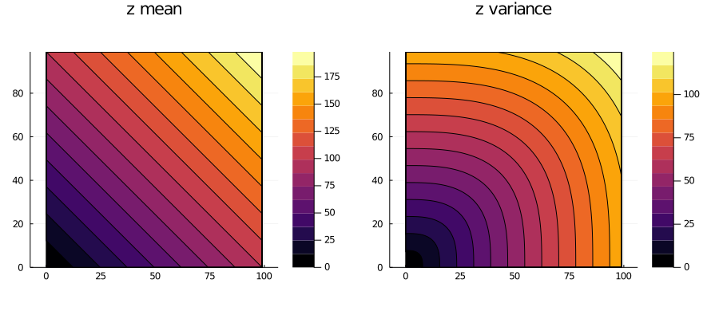
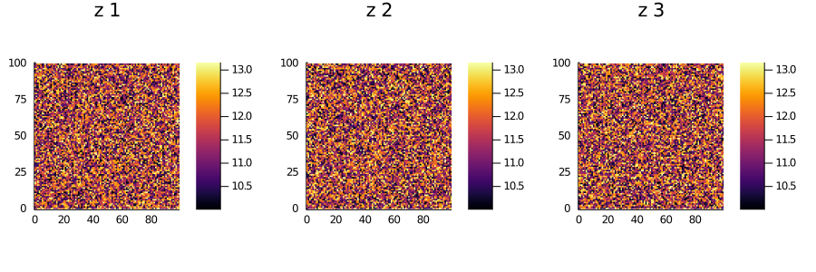
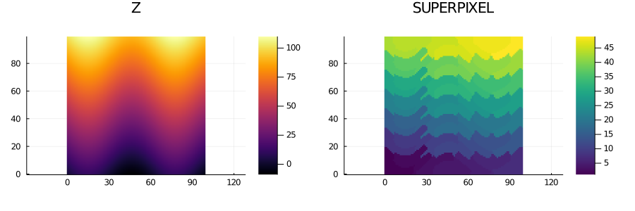

Writing solvers
After reading this guide, you should be able to write your own geostatistical solver, and enjoy a large set of features for free, including distributed parallel execution, a suite of meta algorithms, and various plot recipes. If you have any questions, please don't hesitate to ask in our gitter channel.
Basics
Currently, there are three types of spatial problems defined in the framework:
EstimationProblem
SimulationProblem
LearningProblemAny EstimationSolver in the framework returns an EstimationSolution, which consists of the domain of the EstimationProblem plus two dictionaries: mdict mapping the variable names (a Symbol) of the problem to mean values, and vdict mapping the same variable names to variance values:
EstimationSolution(domain, mdict, vdict)Any SimulationSolver in the framework returns a SimulationSolution, which consists of the domain of the SimulationProblem plus a dictionary rdict mapping the variable names (a Symbol) of the problem to a vector of (flattened) realizations:
SimulationSolution(domain, rdict)Any LearningSolver in the framework returns AbstractData with variables learned for the specified learning task.
The task of writing a solver for a geostatistical problem consists of writing a simple function in Julia that takes the problem as input and returns the solution. In the following sections we illustrate the development process and share working examples that could be copied/pasted as starters.
Writing estimation solvers
Create the package
Install the PkgTemplates.jl package and create a new project:
using PkgTemplates
generate_interactive("MySolver")This command will create a folder named ~/user/.julia/vx.y/MySolver with all the files that are necessary to load the new package:
using MySolverChoose a license for your solver. If you don't have major restrictions, I suggest using the ISC license. This license is equivalent to the MIT and BSD 2-Clause licenses, plus it eliminates unncessary language. Try to choose a permissive license so that your solver can be used, and improved by private companies.
Import GeoStatsBase
After the package is created, open the main source file MySolver.jl and add the following line:
using GeoStatsBase
import GeoStatsBase: solveThese lines bring all the symbols defined in GeoStatsBase into scope, and tell Julia that the method solve will be specialized for the new solver. Next, give your solver a name:
struct MyCoolSolver <: AbstractEstimationSolver
# optional parameters go here
endand export it so that it becomes available to users of your package:
export MyCoolSolverAt this point, the MySolver.jl file should have the following content:
module MySolver
using GeoStatsBase
import GeoStatsBase: solve
export MyCoolSolver
struct MyCoolSolver <: AbstractEstimationSolver
# optional parameters go here
end
end # moduleWrite the algorithm
Now that your solver type is defined, write your algorithm. Write a function called solve that takes an estimation problem and your solver, and returns an estimation solution:
function solve(problem::EstimationProblem, solver::MyCoolSolver)
pdomain = domain(problem)
mean = Dict{Symbol,Vector}()
variance = Dict{Symbol,Vector}()
for (var,V) in variables(problem)
push!(mean, var => rand(npoints(pdomain)))
push!(variance, var => rand(npoints(pdomain)))
end
EstimationSolution(pdomain, mean, variance)
endPaste this function somewhere in your package, and you are all set.
Test the solver
To test your new solver, load the GeoStats.jl package and solve a simple problem:
using GeoStats
using MySolver
sdata = readgeotable("samples.csv", coordnames=[:x,:y])
sdomain = RegularGrid(100, 100)
problem = EstimationProblem(sdata, sdomain, :value)
solution = solve(problem, MyCoolSolver())
plot(solution)Writing simulation solvers
The process of writing a simulation solver is very similar, but there is an alternative function to solve called solvesingle that is preferred. The function solvesingle takes a simulation problem, one of the variables to be simulated, a solver, and a preprocessed input, and returns a vector with the simulation results:
function solvesingle(problem::SimulationProblem, covars::NamedTuple,
solver::MySimSolver, preproc)
# retrieve problem info
pdata = data(problem)
pdomain = domain(problem)
real4var = map(covars.names) do var
# output is a single realization for each covariable
real = Vector{V}(undef, npoints(pdomain))
# fill realization with hard data
for (loc, datloc) in datamap(problem, var)
real[loc] = pdata[datloc,var]
end
# algorithm goes here
# ...
var => real
end
Dict(real4var)
endThis function is preferred over solve if your algorithm is the same for every single realization (the algorithm is only a function of the random seed). In this case, GeoStats.jl will provide an implementation of solve for you that calls solvesingle in parallel.
The argument preproc is ignored unless the function preprocess is also defined for the solver. The function takes a simulation problem and a solver, and returns an arbitrary object with preprocessed data:
preprocess(problem::SimulationProblem, solver::MySimSolver) = nothingWriting learning solvers
Similar to the other cases, writing a LearningSolver compatible with the framework consists of writing a simple Julia function that takes the LearningProblem as input along with the solver, and returns spatial data with learned variables.
Examples
Estimation
An estimation solver that, for each location of the domain, assigns the 2-norm of the coordinates as the mean and the ∞-norm as the variance.
using GeoStatsBase
using LinearAlgebra: norm
# implement method for new solver
import GeoStatsBase: solve
@estimsolver NormSolver begin
@param pmean = 2
@param pvar = Inf
end
function solve(problem::EstimationProblem, solver::NormSolver)
pdomain = domain(problem)
# results for each variable
μs = []; σs = []
for covars in covariables(problem, solver)
for var in covars.names
# get user parameters
varparams = covars.params[(var,)]
# get variable type
V = variables(problem)[var]
# allocate memory for result
varμ = Vector{V}(undef, npoints(pdomain))
varσ = Vector{V}(undef, npoints(pdomain))
for location in traverse(pdomain, LinearPath())
x = coordinates(pdomain, location)
varμ[location] = norm(x, varparams.pmean)
varσ[location] = norm(x, varparams.pvar)
end
push!(μs, var => varμ)
push!(σs, var => varσ)
end
end
EstimationSolution(pdomain, Dict(μs), Dict(σs))
end;solve (generic function with 5 methods)We can test the newly defined solver on an estimation problem:
using GeoStats
using Plots
# dummy spatial data with a single point and no value
sdata = georef((z=[NaN],), reshape([0.,0.], 2, 1))
# estimate on a regular grid
sdomain = RegularGrid(100, 100)
# the problem to be solved
problem = EstimationProblem(sdata, sdomain, :z)
# our new solver
solver = NormSolver()
solution = solve(problem, solver)
contourf(solution)
And assess the behavior of different parameters:
solver = NormSolver(:z => (pmean=1,pvar=3))
solution = solve(problem, solver)
contourf(solution)
Simulation
A simulation solver that, for each location of the domain, assigns a random sample from a Gaussian distribution.
using GeoStatsBase
# implement method for new solver
import GeoStatsBase: solvesingle
@simsolver RandSolver begin
@param mean = 0
@param var = 1
end
function solvesingle(problem::SimulationProblem, covars::NamedTuple,
solver::RandSolver, preproc)
pdomain = domain(problem)
real4var = map(covars.names) do var
# retrieve solver parameters
varparams = covars.params[(var,)]
μ, σ² = varparams.mean, varparams.var
# i.i.d. samples ~ Normal(0,1)
z = rand(npoints(pdomain))
# rescale and return
var => μ .+ sqrt(σ²) .* z
end
Dict(real4var)
end;solvesingle (generic function with 3 methods)We can test the newly defined solver in a simulation problem:
using GeoStats
using Plots
# simulate on a regular grid
sdomain = RegularGrid(100, 100)
# the problem to be solved
problem = SimulationProblem(sdomain, :z => Float64, 3)
# our new solver
solver = RandSolver(:z => (mean=10.,var=10.))
solution = solve(problem, solver)
heatmap(solution)
Note, however, that we did not define the preprocess function for the solver. This function can be used to avoid recalculations for each realization, and to set default parameters for variables that are not explicitly set by users in the solver constructor:
import GeoStatsBase: preprocess
function preprocess(problem::SimulationProblem, solver::RandSolver)
preproc = Dict()
for covars in covariables(problem, solver)
for varname in covars.names
varparams = covars.params[(varname,)]
preproc[varname] = (mean=varparams.mean, var=varparams.var)
end
end
preproc
end;preprocess (generic function with 5 methods)We can call the preprocess function on problems with multiple variables to check that the solver is producing default values for variables other than the one passed during construction:
problem = SimulationProblem(sdomain, (:z=>Float64, :w=>Float64), 3)
preprocess(problem, solver)Dict{Any,Any} with 2 entries:
:w => (mean = 0, var = 1)
:z => (mean = 10.0, var = 10.0)This preproc output is passed by GeoStats.jl as the last argument to the solvesingle function, which could be reimplemented as follows:
function solvesingle(problem::SimulationProblem, covars::NamedTuple,
solver::RandSolver, preproc)
pdomain = domain(problem)
real4var = map(covars.names) do var
# retrieve solver parameters
μ, σ² = preproc[var]
# i.i.d. samples ~ Normal(0,1)
z = rand(npoints(pdomain))
# rescale and return
var => μ .+ sqrt(σ²) .* z
end
Dict(real4var)
end;solvesingle (generic function with 3 methods)Learning
A learning solver that clusters data into super pixels:
using GeoStatsBase
# implement method for new solver
import GeoStatsBase: solvesingle
struct SLICSolver <: AbstractLearningSolver
k::Int # approximate number of super pixels
m::Float64 # SLIC tradeoff parameter
end
function solve(problem::LearningProblem, solver::SLICSolver)
@assert task(problem) isa ClusteringTask "invalid problem"
# retrieve problem info
ptask = task(problem)
feats = collect(features(ptask))
tdata = targetdata(problem)
output = outputvars(ptask)[1]
# find super pixels
slic = SLICPartitioner(solver.k, solver.m, vars=feats)
part = partition(tdata, slic)
# label for each point in target data
labels = Vector{Int}(undef, npoints(tdata))
for (i, inds) in enumerate(subsets(part))
labels[inds] .= i
end
# return learning solution
georef((; output => labels), domain(tdata))
end;solve (generic function with 1 method)We can test the newly defined solver in a learning problem:
using GeoStats
using Plots
Ω = georef((Z=[10sin(i/10) + j for i in 1:100, j in 1:100],))
t = ClusteringTask(:Z, :SUPERPIXEL)
p = LearningProblem(Ω, Ω, t)
s = solve(p, SLICSolver(50, 0.01))
plot(plot(Ω), plot(s, c=:viridis))